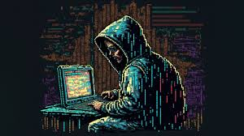
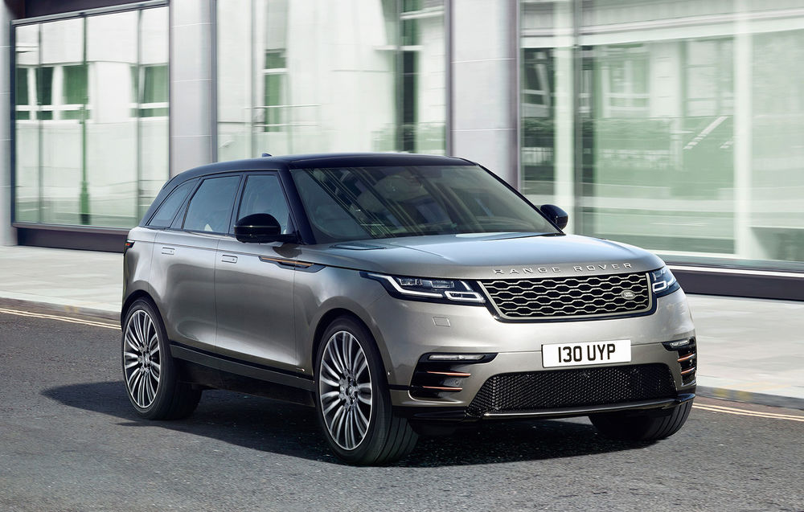
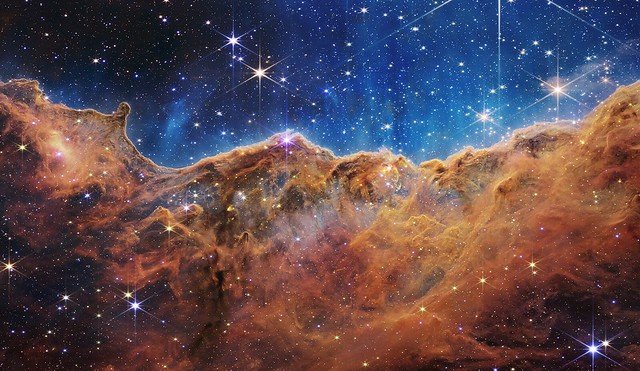

Acuma am sa va prezint principalele mele hobby-uri:
| Calculatoare | Masini | Fotbal | Spatiu | Astrofizica |
|---|---|---|---|---|
|  |  |  |
 |  |
| Sunt fascinat de calculatoare, sunt uimit cum de niste piese de metal pot crea un sistem de operare, putand sa conecteze la internet. | Ma pasioneaza masinile datorita frumusetii, elegantei, comfortul si utilitatii pe care o au. | Fotbalul uneste oamenii prin farmecul sau, un joc pe care orcine il poate juca. Jucatorul meu preferat e Messi. | Sunt uimit mereu de imensitatea si complexitatea spatiului. | Pentru a intelege universul, trebuie sa stim si putina teorie. |